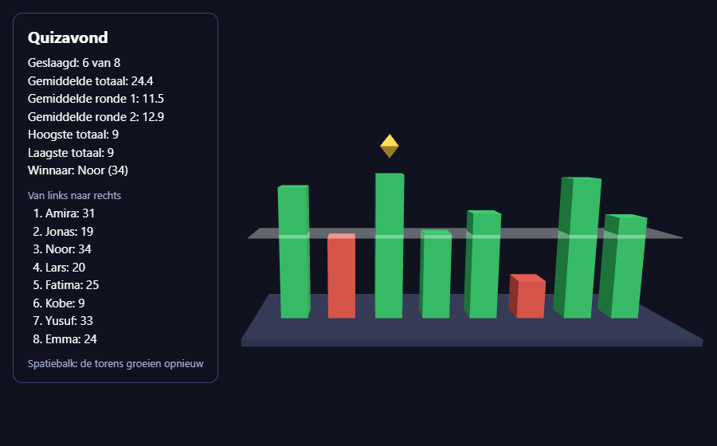
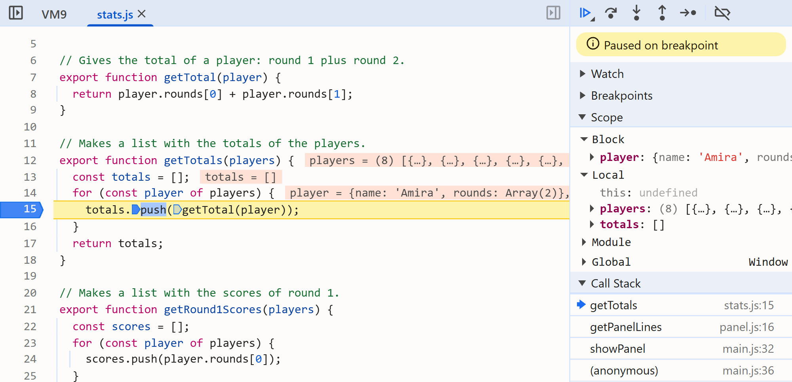
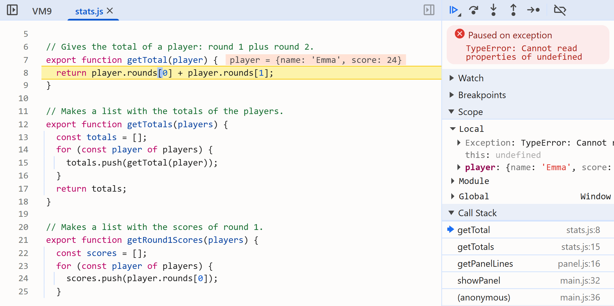
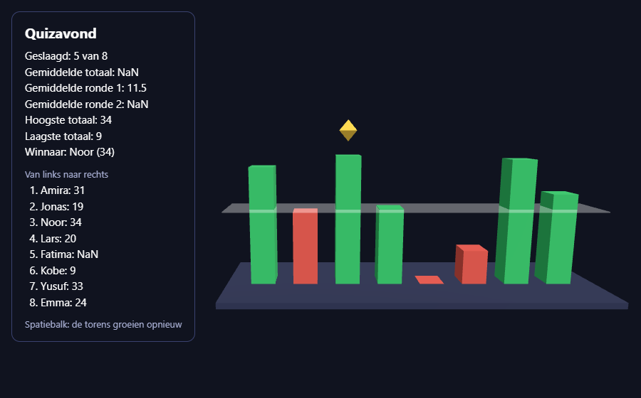

Wat doe je eerst met een project dat je overneemt?Zelf kijken: lezen, starten en een kaart maken.
Een review geeft vier suggesties. En dan?Je beoordeelt ze één voor één. Suggesties zijn geen beslissingen.
Hoe beschrijf je een fout aan een agent?Verwacht gedrag, werkelijk gedrag en één concreet geval.
Terugblik · zo werkte je in module 4
Zo werk je verder aan een project
1 · Kijk zelf
Lezen, starten, een kaart maken.
→
2 · Vraag uitleg
Over één ding. De agent verandert niets.
→
3 · Eén wijziging
Zeg wat verandert, en wat blijft.
→
4 · Controleer
Voor en na. Begrijp wat er veranderde.
Vandaag komt er een vraag bij: wat doe je als het stukgaat?
Van module 4 naar module 5
Vorige week werkte het project. Vandaag gaat het stuk.
Fouten opsporen en oplossen heet debuggen. Een agent helpt bij elke stap. Jij beslist wat hij krijgt, en jij controleert.
Live · voor we beginnen
Staat alles klaar?
Open je agent harness. Controleer je permissions en je model.
Pak de startbestanden van module 5 uit. Open de map scorebord2-e1.
Open een terminal. Typ node --version.
Open het invulbestand van module 5.
Start het project nog niet: dat is de eerste stap van E1. Elke oefening heeft haar eigen map.
Vandaag
Drie blokken, twee pauzes
Blok 1 · 60 min
Fouten lezen
Een foutmelding, een stack trace, de debugger en een minimal example
pauze 15 min
Blok 2 · 45 min
Zoeken en opruimen
Hypothesen, code smells en refactoring
pauze 15 min
Blok 3 · 45 min
Bewaken
Tests, een regression test, en inleveren
Eén project, de hele les: versie 2 van het scorebord. Elke oefening zegt hoeveel prompts je hoogstens stuurt.
5.1
Foutmeldingen en stack traces lezen
De pagina is leeg. In de console staat rode tekst.
Het project van vandaag
Het scorebord heeft een versie 2
De quiz heeft nu twee rondes. Een toren toont het totaal.
data.js: elke speler heeft een lijst rounds.
stats.js: het totaal, het gemiddelde per ronde, het hoogste en het laagste totaal.
panel.js: nieuw. De tekst van het paneel.

Live · de organisator verbetert een score, zoals in versie 1
De pagina crasht
data.js · de regel van Emma
{ name: 'Emma', score: 24 },
Geen cijfers, geen namen en geen torens. In de console van de browser:
Uncaught TypeError: Cannot read properties of undefined (reading '0')
at getTotal (stats.js:8:23)
at getTotals (stats.js:15:17)
at getPanelLines (panel.js:16:18)
at showPanel (main.js:32:21)
at main.js:36:1
Lees altijd in dezelfde volgorde
Een foutmelding heeft drie delen
TypeError: Cannot read properties of undefined (reading '0')
at getTotal (stats.js:8:23)
1 · Het type
Welke soort fout is het?
2 · De boodschap
Wat liep er mis? De code wil plaats 0 lezen van iets, en dat iets is undefined.
3 · De plaats
Het bestand, de regel en de kolom: regel 8 van stats.js.
Het type zegt in welke richting je zoekt
Drie types die je vaak ziet
Type
Wat het zegt
Voorbeeld van een boodschap
SyntaxError
De code is niet geldig geschreven. Het programma start niet.
missing ) after argument list
ReferenceError
De code gebruikt een naam die niet bestaat.
totaal is not defined
TypeError
Een waarde is van een andere soort dan de code verwacht.
Cannot read properties of undefined
Er bestaan nog types, zoals RangeError. Je leest ze op dezelfde manier: type, boodschap, plaats.
De regels die met at beginnen
De stack trace: wie riep wie aan?
at getTotal (stats.js:8:23)
at getTotals (stats.js:15:17)
at getPanelLines (panel.js:16:18)
at showPanel (main.js:32:21)
at main.js:36:1
Regels met node:internal of uit een library sla je over.
Stack trace: de lijst van de functions die bezig waren op het moment van de fout.
Lees van boven naar onder.
Bovenaan: waar de fout optrad.
Elke regel eronder: wie riep de function erboven aan?
Interactieve demo: volg hoe main.js, showPanel, getPanelLines, getTotals en getTotal elkaar aanroepen, en zie hoe de stack trace ontstaat. Open demos/stack-trace.html.
De plaats van de fout is niet altijd de oorzaak.
Is deze code fout, of kreeg ze iets fouts? Volg de waarde terug. Hier zit de oorzaak in data.js: een bestand dat niet in de stack trace staat.
En de torens? Na een fout stopt het script. Wat erna komt, wordt niet uitgevoerd.
Een foutmelding is een goed begin. Soms is ze niet genoeg.
Niet elke fout is zo duidelijk
Wat er gebeurt
Waarom het moeilijker is
Geen foutmelding, wel een fout resultaat
Geen stack trace: 5.2 en 5.3.
Een waarde werd fout, lang voor de crash
Dat staat niet in de stack trace.
Code die later loopt: na een klik of een timer
De stack trace begint pas bij die code.
De fout treedt niet elke keer op
Door de input, of door een race condition.
Dan kijk je zelf wat de code doet, terwijl ze loopt. Dat doe je met een debugger.
In je browser: F12, en dan de tab Sources
Een debugger pauzeert je code

1234
1BreakpointOp deze regel pauzeert de code.
2ScopeDe waarden van de variables, op dit moment.
3Call StackWie riep wie aan? Dezelfde lijst als de stack trace.
4De knoppenVerder lopen, of stap per stap.
Je code staat stil op een regel. En dan?
Vier knoppen om verder te gaan
Resume
Loop verder, tot het volgende breakpoint. F8
Step over
Voer deze regel uit, en pauzeer op de volgende. F10
Step into
Ga de function binnen die deze regel aanroept. F11
Step out
Loop deze function uit, terug naar wie ze aanriep. Shift+F11
Visual Studio Code heeft een debugger met bijna dezelfde knoppen. Daarmee pauzeer je code die in Node.js loopt, zoals node check.js.
Live · de crash van Emma, nu in de debugger van de browser
De debugger stopt waar het misloopt
1BreakpointOp regel 15 van stats.js. Herlaad.
2Stap per stapStep into, step out, step over.
3Stop op de foutVink “Pause on uncaught exceptions” aan.
4ResumeDe code pauzeert op de regel die crasht.

Live · eerst uitleg, zonder wijziging
Geef een agent de volledige melding
Verander niets aan de code. Ik paste de regel van Emma aan in data.js. Sindsdien is de pagina leeg, en in de console staat:
Uncaught TypeError: Cannot read properties of undefined (reading '0')
at getTotal (stats.js:8:23)
at getTotals (stats.js:15:17)
at getPanelLines (panel.js:16:18)
at showPanel (main.js:32:21)
at main.js:36:1
Leg in eenvoudige woorden uit wat deze melding zegt. Waar treedt de fout op, en waar kan de oorzaak zitten?
de volledige meldingwat je het laatst veranderdeeerst uitleg
Een agent ziet je scherm niet
Wat leest een agent zelf?
Waar staat de melding?
Leest de agent ze?
In de output van een commando dat de agent zelf uitvoerde
Ja.
In een terminal waarin jij een commando typte
Reken er niet op. Plak de output, of laat de agent het commando uitvoeren.
In de console van je browser
Niet vanzelf. Kopieer de melding en plak ze.
De crash van het scorebord staat in de console van je browser, niet in de terminal van node server.js. Met node check.js treedt ze op in de terminal: daar leest een agent ze zelf.
Tip voor later · je app draait bij gebruikers
De console van je gebruikers zie je niet
Je app crasht bij een gebruiker. De stack trace staat in de browser of op de gsm van die gebruiker, niet bij jou.
Je hoort alleen: “het werkt niet”. Zo kan je de fout moeilijk reproduceren.
Error tracking: je app stuurt elke crash zelf naar jou door, met de foutmelding en de stack trace.
SentryRollbarFirebase Crashlytics
Let op: zo'n melding kan persoonsgegevens bevatten. Meer over privacy in module 7.
Je vraagt: los deze fout op. Kijk waar de oplossing komt.
Minimal example: het kleinste stuk code dat de fout nog toont.
Kleine, precieze context voor een model
Vraag uitleg met je minimal example
Verander niets aan de code. Deze regel toont [ 25, 9 ]:
console.log([25, 9].sort());
Verwacht: [ 9, 25 ]. Leg in eenvoudige woorden uit waarom sort() dit doet.
Het model: sort() zonder argument vergelijkt de waarden als tekst. “25” komt voor “9”, zoals “ab” voor “b”.
Test de uitleg. Voorspel eerst:
console.log([100, 25, 9].sort());
[ 100, 25, 9 ]
Live · twee oplossingen: kies met je criteria uit module 4
De oplossing: een loop
export functiongetHighest(totals) {
if (totals.length === 0) {
returnnull;
}
let highest = totals[0];
for (const total of totals) {
if (total > highest) {
highest = total;
}
}
return highest;
}
Een loop kan iedereen in het team lezen.
sort verandert de lijst zelf. De afspraak in AGENTS.md: een function in stats.js verandert haar input niet.
Controleer met je minimal example: getHighest([25, 9]) geeft nu 25.
Kan je een fout tonen in een paar regels, dan is het zoeken bijna gedaan.
Je ziet de fout zonder de code eromheen. Je kan ze delen, met een collega of met een model. En je hebt meteen een controle voor later.
Jouw beurt · alleen · met je agent harness
M1Reproduceer en verklein
Stop je server. Open scorebord2-m1. Start het project.
Kijk kritisch naar “Laagste totaal”.
node check.js: staat de fout er ook?
Zet de regels uit de opgave in repro.js.
Maak de lijst kleiner. Vul de tabel in.
Lees nu pas getLowest. Welke regel?
Eén prompt: de oorzaak, zonder wijziging.
13:00
Hoogstens één prompt. Je lost de fout nog niet op.
Tot zo
Pauze
15:00
5.3
Debuggen met hypothesen
Geen foutmelding in de console. Toch kloppen er vier dingen niet.
Live · een week later is Fatima ziek tijdens ronde 2
Eén score ontbreekt

{ name: 'Fatima', rounds: [12] },
Gemiddelde totaal: NaN
Gemiddelde ronde 2: NaN
In de lijst: Fatima: NaN
De toren van Fatima is plat.
Twee manieren om te debuggen
Gokken of testen
Trial and error
Je verandert iets en kijkt of de fout weg is. Verdwijnt ze, dan weet je niet waarom, en niet of ze terugkomt.
Debuggen met hypothesen
Je zoekt eerst de oorzaak. Na elke test weet je meer, ook als je fout zat.
Hypothese: een mogelijke oorzaak die je kan testen.
Voorspel, verander en kijk, nu voor een fout
Vier stappen
Observeer. Noteer alles wat niet klopt.
Formuleer een hypothese. “Ik denk dat de oorzaak dit is.”
Voorspel en test. Meet één ding.
Besluit. Klopt ze, of niet? Je weet in elk geval meer.
Live · één regel in panel.js, en dan node check.js
console.log is je meetinstrument
De output is tekst. Je kan ze in een prompt plakken, en een agent die het commando zelf uitvoert, leest ze ook. Zo meet een agent vaak zelf. De debugger uit 5.1 toont de waarden op jouw scherm.
Hypothese
Meting
Resultaat en besluit
calculateAverage rekent fout
calculateAverage([10, 20])
15klopt niet
Het totaal van Fatima is NaN
totals
NaN op plaats vijf klopt
getTotal telt een score op die niet bestaat
rounds van Fatima
[12]de oorzaak
12 + undefined geeft NaN. Klaar met meten? Haal je console.log weer weg.
Zoek waar een foute waarde ontstaat, niet waar je ze ziet.
Eén oorzaak, vier gevolgen. De code neemt aan dat elke speler twee scores heeft.
Vraag eerst oorzaken en een test, nog geen oplossing
Een agent als denkpartner
Verander niets aan de code. Sinds ik de regel van Fatima aanpaste in data.js, staat in het paneel "Gemiddelde totaal: NaN" en "Fatima: NaN". Verwacht: getallen. De console toont geen foutmelding.
Geef drie mogelijke oorzaken. Zeg bij elke oorzaak hoe ik ze test met één console.log.
Een model bedenkt snel mogelijke oorzaken. Jij test ze, met één meting.
Meet de agent zelf? Vraag dat hij zijn stappen toont: hypothese, meting, resultaat.
Je stuurt “los het op”, maar je kent de oorzaak nog niet
Wat kan er dan misgaan?
Te veel wijzigingen
De agent verandert drie dingen tegelijk. De fout is weg. Welke wijziging hielp? Dat weet je niet.
Het model kiest een regel
Hoeveel punten krijgt een speler voor een gemiste ronde? Dat staat niet in de code. De organisator beslist: 0 punten. Zet dat in je prompt.
Blijven proberen
Twee pogingen mislukt? Begin dan een nieuw gesprek, en zeg wat je al weet.
Zoek dus eerst de oorzaak. Vraag daarna één wijziging.
Stel: de oplossing komt in getTotal
Controleer alles wat niet klopte
node check.js, na de oplossing
Aantal spelers: 8
Geslaagd: 5 van 8
Gemiddelde totaal: 22.8
Gemiddelde ronde 1: 11.5
Gemiddelde ronde 2: NaN
Hoogste totaal: 34
Laagste totaal: 9
Winnaar: Noor (34)
Het gemiddelde totaal is weer een getal.
“Gemiddelde ronde 2” is nog altijd NaN.
Wie alleen naar het eerste cijfer kijkt, denkt dat het klaar is.
Hier volstaat één regel in data.js: rounds: [12, 0].
Jouw beurt · alleen · met je agent harness
M2Test je hypothesen
Stop je server. Open scorebord2-m2.
node check.js. Reken ronde 2 zelf uit.
Zonder AI: twee hypothesen.
Test er één, met één console.log.
Prompt 1: drie oorzaken, elk met een test.
Prompt 2: de oplossing. Niets anders.
Controleer. Haal je console.log weg.
15:00
Hoogstens twee prompts. “Hoogste totaal: 9” laat je staan.
5.4
Code smells herkennen
Het scorebord werkt. Is de code dan goed?
stats.js · ze werken allebei juist
Twee functions, één teken verschil
export functiongetRound1Scores(players) {
const scores = [];
for (const player of players) {
scores.push(player.rounds[0]);
}
return scores;
}
export functiongetRound2Scores(players) {
const scores = [];
for (const player of players) {
scores.push(player.rounds[1]);
}
return scores;
}
Code smell: een patroon in code dat wijst op een mogelijk probleem met de kwaliteit, terwijl de code juist werkt.
Geen fouten, wel signalen
Vijf code smells in het scorebord
Code smell
In het scorebord
Duplication(dubbele code)
Twee functions die bijna gelijk zijn. Drie keer dezelfde afronding in panel.js.
Magic number
De 10 in Math.round(... * 10) / 10.
Dead code
De function top: geen enkel bestand roept ze nog aan.
Onduidelijke namen
a en x, in die function top.
Debugcode die bleef staan
console.log('winner', winner); in main.js.
Ook vaak: een lange function, en diep geneste conditions.
Live · een vraag van de soort evalueren
Laat een agent code smells zoeken
Verander niets aan de code. Zoek code smells in stats.js en panel.js. Geef er hoogstens vijf. Geef per code smell de regel, het soort smell en in één zin waarom het hier een probleem is.
Klopt het probleem?
Zoek zelf of top echt nergens gebruikt wordt.
Past het voorstel?
Welk deel van het project passen jullie nog aan? Dat staat niet in de code.
Beter?
Wordt de code er beter van, of alleen anders?
Een code smell is een signaal, geen opdracht.
De agent vindt de signalen. Jij beslist welke je aanpakt. Elke wijziging kan ook iets stukmaken.
5.5
Refactoring
De structuur verbeteren, het gedrag behouden.
“Het gedrag blijft hetzelfde” is een belofte. Controleer ze.
Refactoren in drie stappen
Refactoring: de structuur van code verbeteren zonder het gedrag te veranderen.
Leg het gedrag vast. Typ node check.js en bewaar de output.
Zet één kleine stap. Eén stap per prompt.
Controleer. De output, de pagina, en wat er veranderde.
Live · node check.js, voor en na
Eén stap, en dan controleren
In stats.js staan getRound1Scores en getRound2Scores. Ze doen hetzelfde, voor een andere ronde. Maak één function getRoundScores(players, roundNumber), met roundNumber 1 of 2. Gebruik ze in panel.js in plaats van de twee oude functions. Verwijder de oude functions nog niet. Het gedrag blijft precies hetzelfde. Verander niets anders.
stats.js · de nieuwe function
export functiongetRoundScores(players, roundNumber) {
const scores = [];
for (const player of players) {
scores.push(player.rounds[roundNumber - 1]);
}
return scores;
}
De tweede stap: de twee oude functions verwijderen. Zoek eerst of geen enkel bestand ze nog gebruikt.
Een fout oplossen en refactoren: nooit in dezelfde stap.
Een refactoring verandert het gedrag niet. Een oplossing voor een fout net wel. Stond er een fout cijfer in de output? Dan staat het er na de refactoring nog.
Refactoring kan een agent goed: de opdracht is precies, en de output moet gelijk blijven
Waar je op let bij een agent
Een te grote opdracht
“Ruim stats.js op” geeft veel wijzigingen in één keer. Zeg welke code smell, en welke stap.
Input zonder controle
check.js toont alleen de scores van vanavond. Een lege lijst zie je er niet in.
Een naam die elders staat
Krijgt een function een nieuwe naam? Dan moet elk bestand dat ze gebruikt mee veranderen.
Tot zo
Pauze
15:00
Jouw beurt · alleen · met je agent harness
M3Code smells, en één refactoring
Stop je server. Open scorebord2-m3. Typ node check.js.
Zonder AI: drie code smells.
Prompt 1 uit de opgave. Vergelijk.
Prompt 2: één function voor de afronding.
Controleer: node check.js en de pagina.
Zelf: wie gebruikt top? Verwijder ze.
Beter, of alleen anders?
14:00
Hoogstens twee prompts. “Hoogste totaal: 9” blijft staan.
5.6
Regressions voorkomen met tests
Een kleine vergissing. Zes van de acht regels kloppen nog.
Stel: de agent schreef de nieuwe function zonder - 1
Wat werkte, gaat stuk
scores.push(player.rounds[roundNumber]);
Off-by-one error: de code zit één plaats naast de juiste.
Regression(regressie): iets wat werkte, gaat stuk door een wijziging.
node check.js
Aantal spelers: 8
Geslaagd: 5 van 8
Gemiddelde totaal: 22.8
Gemiddelde ronde 1: 11.3Gemiddelde ronde 2: NaN
Hoogste totaal: 34
Laagste totaal: 9
Winnaar: Noor (34)
Met check.js vergelijk jij. Een test vergelijkt zelf.
Een test is code die code controleert
check('hasPassed: 20 is geslaagd', hasPassed(20), true);
check('calculateAverage van 10 en 20 is 15', calculateAverage([10, 20]), 15);
Een naam
Ze staat in de output, naast OK of FOUT.
Wat de code geeft
De function, met een vaste input.
Wat je verwacht
Uit de regels van de quiz, niet uit de code.
node test.js voert ze allemaal uit: zestien keer OK.
Je hoeft niets te vergelijken: de test zegt wat er fout is, en waar
Drie soorten tests
Soort
Wat ze test
In test.js
unit test
één function, apart van de rest
hasPassed(20) geeft true
integration test
meerdere onderdelen die samenwerken
getPanelLines maakt met stats.js de juiste tekst
regression test
een fout die al eens opgelost is
getHighest([25, 9]) geeft 25
node test.js, met de off-by-one error
FOUT paneel: het gemiddelde van ronde 1
verwacht: Gemiddelde ronde 1: 12.3
gekregen: Gemiddelde ronde 1: 11
Tests die slagen, bewijzen alleen wat ze testen.
Alle tests slaagden, ook toen getHighest de fout uit 5.2 nog had. De test gebruikte alleen totalen van twee cijfers.
Live · je minimal example is de test die ontbrak
Van minimal example naar regression test
check('getHighest: een totaal onder 10', getHighest([25, 9]), 25);
node test.js, met de oude getHighest
FOUT getHighest: een totaal onder 10
verwacht: 25
gekregen: 9
Schrijf een test die faalt door de fout.
Los de fout op.
Voer alle tests uit.
Laat de test staan.
Zie je een test eerst falen, dan weet je dat ze de fout kan zien.
Live · een test is een precieze opdracht, met een resultaat dat je kan controleren
Een agent voert de tests zelf uit
Los de fout in getHighest op: getHighest([25, 9]) moet 25 geven. Voer daarna node test.js uit. Alle tests moeten slagen. Verander test.js niet. Verander niets anders.
Voer ze zelf uit
“Alle tests slagen” in een antwoord is een bewering.
Is test.js nog dezelfde?
Een test slaagt ook als iemand de verwachte waarde aanpast.
De code, of de test?
Lees de nieuwe code. Test zelf een tweede input.
Live · optioneel · een test die de pagina opent
Wat deze tests niet zien: de pagina
Headless browser: een browser zonder venster. Code bestuurt hem, in plaats van een muis.
test.js opent geen browser. Een fout in index.html ziet het niet.
Sommige agent harnesses kunnen zelf een browser besturen, vaak met een uitbreiding (plugin).
node browser-check.js
OK het paneel toont de cijfers
OK het paneel toont elke speler
De pagina toont wat panel.js maakt.
De regels blijven dezelfde: jij zegt wat je verwacht, en jij controleert.
Jouw beurt · alleen · met je agent harness
M4Een regression test, en een agent die tests uitvoert
Open scorebord2-m4. Typ node test.js.
Lees test.js: een unit test, een integration test.
Zet de regression test erin. Zie ze falen.
Prompt 1: los getLowest op, met de tests.
Controleer zelf: de tests, test.js, de code.
Twee tests erbij. Faalt er één? Prompt 2.
14:00
Hoogstens twee prompts. Lees een commando voor je het goedkeurt.
Jouw beurt · alleen
Werk af en lever in
Werk je invulbestand af: output, prompts en antwoorden.
Lever het in via de opdracht Oefeningen module 5.
Niet klaar? Werk thuis af. Alles staat in de opgave.
03:00
Stop je server: Ctrl+C.
Onthoud vandaag
Acht regels
Lees het type, de boodschap en de plaats. Dan de stack trace.
De plaats van de fout is niet altijd de oorzaak.
De melding weg is niet de fout weg.
Reproduceer eerst. Maak de fout zo klein mogelijk.
Eén hypothese, één meting, één wijziging.
Een code smell is een signaal. Jij beslist.
Refactor in kleine stappen. Los een fout apart op.
Na elke fout: een regression test. Voer de tests zelf uit.
Voor de volgende les
Wat doe je nu?
✍️
Oefeningen
Nog niet klaar? Werk je invulbestand thuis af en lever het in via de opdracht Oefeningen module 5.
✅
Test jezelf
De quizzen 5.1 tot en met 5.6. Ze tellen niet mee.
🔎
Meer oefenen?
X1: vier foutmeldingen lezen. X11: een headless browser controleert de pagina. X14: zelf werken met de debugger van je browser.
Volgende les: module 6, Tests en documentatie met AI.